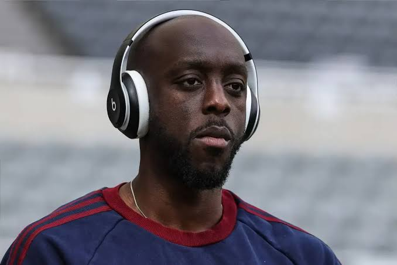

For roughly 48 hours, nobody at Wooburt City Cool Cats seemed entirely sure who wanted to leave, who wanted to stay, or who might walk through the doors next.
It began with a goodbye.
It ended with one of the most remarkable trades in club history.
And somewhere in Denver, a marijuana sponsorship was apparently caught directly in the middle of it all.
Lewis-Potter Leaves Home
When Keane Lewis-Potter learned he would be leaving Wooburt City for Omar FC in Denver, there was genuine optimism surrounding the move.
Lewis-Potter had spent four consecutive gameweeks with the Cool Cats. He had become part of the fabric of a young club still establishing its identity, but Denver represented something different.
A fresh start. A new city. A new dressing room.
The Cool Cats received Alex Iwobi in return, wished Lewis-Potter well publicly, and attempted to move forward.
There was only one problem.
Sources around the club describe a player who underestimated just how attached he had become to Wooburt City. The familiar dressing room, the supporters and the feeling of belonging suddenly meant considerably more once they were gone.
What had initially looked like an exciting new chapter reportedly became something closer to homesickness.
The message eventually made its way back to Wooburt City:
But while one player regretted going to Denver, another was furious that he hadn't.
Wissa: “Why Wasn't It Me?”

Yoane Wissa found himself at the center of an increasingly bizarre 48 hours of transfer negotiations.
Yoane Wissa had watched the original Lewis-Potter–Iwobi trade unfold from inside the Wooburt City dressing room.
And according to sources close to the situation, he wasn't happy.
Wissa had reportedly been positioning himself for a potential future in Denver and had even secured a brand agreement with a marijuana company based in the city.
There was just one fairly significant complication.
When Lewis-Potter was sent to Denver instead, Wissa was said to be extremely upset that he had not been included in the deal.
Suddenly, two players wanted the exact opposite of what had just happened.
Lewis-Potter was in Denver wanting Wooburt City.
Wissa was in Wooburt City wanting Denver.
The phones started ringing again.
The Negotiations Reopen
Behind closed doors, Cool Cats management began discussions with Omar FC.
Initially, the solution appeared relatively straightforward: find a route to bring Lewis-Potter home while allowing Wissa to pursue the move he wanted.
But the negotiations grew.
Names were discussed.
Proposals changed.
The Alex Iwobi deal from the original trade remained part of the wider picture.
Then came the name nobody around Wooburt City expected.
Gravenberch.
Suddenly, this was no longer simply an attempt to reverse a transfer.
It had become an opportunity.
After lengthy discussions and deliberation between the two clubs, the framework was finally agreed.
And when all of the movement from the two days was finally accounted for, the Cool Cats had turned Wissa into an extraordinary haul:
Alex Iwobi.
Keane Lewis-Potter.
Ryan Gravenberch.
Lewis-Potter was coming home.
Iwobi remained a Cool Cat.
And Gravenberch was coming with him.
Two Days Later
Football moves quickly.
Emotion moves even faster.
Only two days earlier, Lewis-Potter's departure had divided supporters. The club had been forced to publicly defend the decision to trade a player who had spent four straight gameweeks wearing Cool Cats colors.
Then he wanted back.
Wissa wanted out.
Gravenberch appeared seemingly from nowhere.
And the entire situation flipped.
Now the noise has finally begun to fade.
Lewis-Potter is back where he wanted to be.
Wissa gets his move to Denver—and, presumably, a considerably easier commute to his newest commercial obligations.
Iwobi remains one of the newest members of the project.
Gravenberch walks into Wooburt City as the unexpected prize of a negotiation that initially wasn't supposed to involve him at all.
Most importantly, the dressing room can finally breathe.
The supporters can stop refreshing their phones.
The players can get back to football.
And Cool Cats management can look back at one of the strangest 48-hour periods in the club's young history knowing that somehow, through homesickness, frustration, negotiations and one extremely Denver-specific endorsement deal, they emerged with three players for one.
Football is a business.
Sometimes it's also completely ridiculous.
Keane Lewis-Potter
Ryan Gravenberch
Three Cool Cats.
One very happy Lewis-Potter.